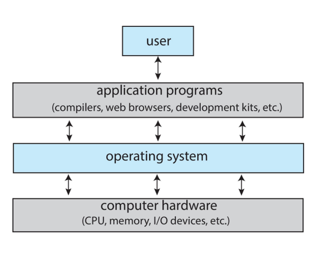

Definizione, struttura, architettura multiprocessore, system calls e modelli architetturali del kernel. Il punto di partenza per capire come funziona un sistema operativo moderno.
Il sistema operativo è il software che fa da intermediario tra l'hardware della macchina e le applicazioni che girano su di essa. Il suo compito principale è gestire le risorse fisiche — processore, memoria, dispositivi di I/O — e metterle a disposizione dei programmi utente in modo sicuro, ordinato ed efficiente.
Dal punto di vista dell'utente, il SO nasconde la complessità dell'hardware e fornisce un'interfaccia coerente (shell, GUI, API). Dal punto di vista del sistema, è un gestore di risorse che deve massimizzare l'utilizzo dell'hardware evitando conflitti tra i processi in esecuzione.
Il componente centrale che rimane sempre in memoria e gira in modalità privilegiata si chiama kernel. Tutto il resto — shell, utility, librerie di sistema — è software che gira al di sopra del kernel.
L'architettura è composta in questo modo :

I sistemi moderni montano più CPU (o più core per CPU) che condividono la stessa memoria principale e lo stesso bus di sistema. Questo approccio porta due vantaggi chiave: maggiore throughput (più lavoro per unità di tempo) e maggiore affidabilità (se una CPU si guasta le altre continuano).
Si distinguono due grandi famiglie. I sistemi asimmetrici (AMP) assegnano ruoli diversi a CPU diverse: una CPU master gestisce il sistema e delega i task alle slave. I sistemi simmetrici (SMP), oggi dominanti, trattano tutte le CPU allo stesso modo: ognuna può eseguire qualsiasi processo e accedere alla memoria condivisa.
Il SO deve gestire la concorrenza tra CPU, proteggere le strutture dati del kernel con lock, e distribuire il carico equamente tra i processori disponibili tramite il load balancing.
Nella Symmetric Multi-Processing ogni CPU ha accesso uniforme all'intera RAM. Ogni processore esegue una copia del SO e le istanze si coordinano tra loro. Lo scheduler del kernel può assegnare qualsiasi thread a qualsiasi CPU disponibile.
Il design multicore integra più unità di elaborazione (core) sullo stesso chip fisico. I core condividono la cache L3 e il collegamento al bus, riducendo la latenza di comunicazione rispetto a CPU separate. Oggi quasi tutti i processori consumer e server sono multicore: da 4 a 128+ core per chip.
Una sfida critica è la cache coherency: se due core modificano la stessa variabile nelle rispettive cache L1, i valori devono essere sincronizzati tramite protocolli hardware (MESI, MOESI) per evitare che un core legga dati obsoleti.
In sistemi con decine o centinaia di CPU, avere un'unica memoria condivisa crea un collo di bottiglia sul bus. L'architettura NUMA risolve il problema assegnando a ogni CPU (o gruppo di CPU) un banco di memoria "locale" cui accede con latenza minima, e lasciando accessibile tutta la memoria "remota" con latenza maggiore.
Il SO NUMA-aware cerca di allocare memoria locale al processo che la usa e di schedulare i thread sulle CPU
vicine alla memoria che contiene i loro dati. Linux gestisce questo tramite il concetto di NUMA node e offre API come numactl per controllare
l'affinità.
Un accesso a memoria remota può essere 2-10 volte più lento rispetto a uno locale. Su sistemi ad alto carico, un'ottimizzazione NUMA scorretta può dimezzare le prestazioni.
Il SO fornisce un insieme di servizi sia verso l'utente che verso i programmi. I principali sono: gestione dei processi (creazione, scheduling, terminazione), gestione della memoria (allocazione, protezione, paginazione), gestione del file system (creazione, lettura, scrittura, permessi), gestione dell'I/O (astrazione dei dispositivi, buffering, spooling).
A questi si aggiungono servizi di comunicazione interprocesso (pipe, socket, memoria condivisa), protezione e sicurezza (isolamento tra processi, autenticazione, controllo degli accessi) e interfaccia utente (CLI tramite shell, GUI tramite window manager).
Le system call sono l'interfaccia programmabile tra un processo in user space e il kernel. Quando un programma ha bisogno di un servizio privilegiato — aprire un file, creare un processo, scrivere su un socket — deve chiedere al kernel di farlo per suo conto tramite una syscall.
Esempi fondamentali: fork() crea un processo figlio, read() e write() leggono e scrivono da file descriptor,
open() apre un file, exit() termina il processo, mmap() mappa memoria come la memory-mapped-file.
Il programmatore raramente chiama direttamente le syscall: usa le funzioni della libreria C standard (libc) che le wrappano. Ad esempio, la funzione C printf()
alla fine chiama la syscall write().
Il meccanismo hardware su x86-64 funziona così: l'applicazione carica il numero di
syscall nel registro rax e i parametri negli altri registri, poi esegue
l'istruzione syscall. La CPU salva il contesto, passa in kernel mode, e il kernel
legge il numero in rax per chiamare l'handler corretto dalla syscall table.
Su Linux, ogni syscall è identificata da un numero intero definito in asm/unistd.h.
Attualmente Linux ha circa 350 syscall attive.
Le syscall si raggruppano in cinque categorie principali. Il controllo dei processi
include fork(), exec(), wait(), exit(), getpid(). La
gestione dei file comprende open(), read(), write(), close(), stat(), unlink().
La gestione dei dispositivi usa ioctl() per comandi
device-specific e read()/write() su file descriptor di
dispositivo. La gestione delle informazioni di sistema include time(), uname(), sysinfo().
Infine le comunicazioni sfruttano socket(), send(), recv(), pipe(), mmap().
Esistono diversi approcci architetturali al design di un kernel. Il kernel monolitico (usato da Linux, FreeBSD) inserisce tutti i servizi — scheduler, driver, filesystem, networking — in un unico spazio di indirizzamento. È veloce (nessun overhead di comunicazione tra componenti) ma più difficile da mantenere.
L'approccio a strati organizza il kernel in livelli gerarchici, dove ogni strato usa solo i servizi dello strato immediatamente inferiore. Più ordinato concettualmente, ma introduce latenza per ogni attraversamento di strato.
L'approccio modulare, usato da Linux in pratica, combina il nucleo monolitico con la possibilità di caricare e scaricare moduli a runtime (ad esempio i driver). Offre flessibilità senza sacrificare le prestazioni.
In un'architettura a microkernel il nucleo ridotto al minimo (IPC, gestione memoria di base, scheduling elementare) gira in kernel mode, mentre tutto il resto — driver, filesystem, protocolli di rete — gira come server in user space.
I vantaggi sono significativi: se un driver di dispositivo crasha, non porta giù l'intero sistema (fault isolation). Il codice kernel è più piccolo, più facile da verificare formalmente e più sicuro. Esempi notevoli: Mach (base di macOS/iOS), MINIX 3, QNX (usato in automotive e sistemi embedded).
Lo svantaggio principale è la latenza di comunicazione: ogni richiesta a un server richiede almeno due context switch (user → kernel → user). Su sistemi ad alto carico questo overhead diventa visibile, motivo per cui i SO general-purpose hanno preferito il kernel monolitico modulare.
I kernel moderni, Linux in primis, supportano i Loadable Kernel Modules (LKM)
Loadable Kernel Modules : porzioni di codice compilate separatamente che possono essere inserite o rimosse dal kernel a runtime senza riavviare il sistema
Ogni modulo esporta una funzione di inizializzazione e una di pulizia. Quando viene caricato con insmod o modprobe, il suo codice viene collegato
dinamicamente al kernel. Quando viene rimosso con rmmod, le sue risorse vengono
liberate.
Le differenze con il microkernel sono che operano a livello kernel anziché a livello user e possono comunicare l'un l'altro direttamente